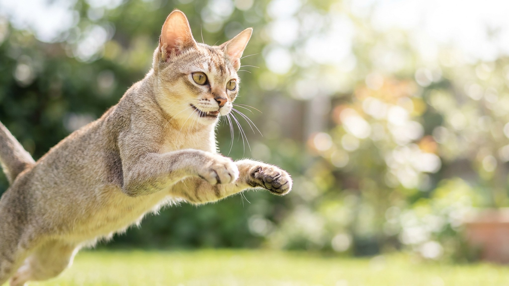

Взрослая сингапура весит 2–3 кг — меньше, чем иная кошка в полгода. Её легко принять за подростка, который никак не вырастет. Но за кукольной внешностью прячется неутомимый, любопытный и очень «прилипчивый» характер. Разбираем, чем живёт самая маленькая кошка планеты и к чему готовиться будущему хозяину.
🐾 Питомец ведёт себя странно?
AnimaLife расшифрует поведение кошки и собаки и подскажет, что делать. Попробуйте бесплатно прямо в мессенджере.
Сингапура официально считается самой маленькой породой кошек. Кошки весят около 2 кг, коты — до 3 кг, при этом сложены плотно и мускулисто, а не хрупко. Крупные глаза и большие уши на маленькой мордочке усиливают «вечно котёнок» эффект.
Маленький размер не значит «тихая и ленивая». Наоборот: энергии в этом теле как в двух обычных кошках, а компактность лишь помогает забираться туда, где кошка покрупнее не поместится.
Родом сингапура из Юго-Восточной Азии — считается, что порода происходит от местных уличных кошек Сингапура, отсюда и название. Отпечаток тёплого климата виден до сих пор: короткая шерсть и любовь к жаре — прямое наследство родины.
Сингапура — кошка-компаньон, глубоко привязанная к людям. Она ходит за хозяином из комнаты в комнату, участвует во всех домашних делах, любит сидеть на плече и на коленях. Одиночество переносит плохо: если дома подолгу пусто, ей нужен второй питомец или продуманные занятия.
🐾 Здоровье питомца под контролем
AI-ветеринар, дневник здоровья и персональные советы для вашего питомца — установите AnimaLife бесплатно.
🐾 Понравился разбор?
Подпишитесь на канал — каждый день разбираем по одному тревожному симптому у кошек и собак: что в пределах нормы, а когда пора к врачу. Подпишитесь, чтобы не пропустить разбор, который может спасти здоровье вашего питомца.
Короткая тонкая шерсть почти без подшёрстка греет слабо, поэтому сингапура постоянно ищет тепло: батарея, солнечное пятно на полу, колени, одеяло, компания другого питомца. Зимой и в прохладной квартире стоит устроить ей тёплое лежбище повыше от пола и подальше от сквозняков.
Вертикальное пространство для этой породы — не роскошь, а необходимость. Высокий комплекс, полки-ступени, место у окна дадут выход энергии и чувство безопасности. Без этого активная кошка начнёт осваивать шторы и шкафы самостоятельно.
Сингапура — редкий случай, когда «маленькая» не равно «спокойная». Это тёплолюбивый, привязчивый и деятельный компаньон, которому нужны не размеры квартиры, а высота, тепло и ваше внимание. Дайте ей это — и получите преданную тень на долгие годы.
Материал носит информационный характер и не заменяет очную консультацию ветеринара.